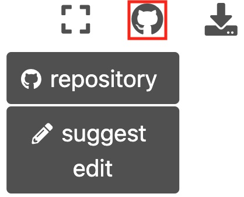

Digital Tibetan
Contents
Digital Tibetan¶
Welcome to the Digital Tibetan v3.0
Warning
The Project is in a very early stage.
URLs will still change!
Note
This site will become in time the successor for the old DigitalTibetan v2.0 Mediawiki site. An archived version of the old site is still available at archive.org DigitalTibetan
Contribute! Simply select the Github-icon ( on of the icons on the top-right) and ‘suggest an edit’. No worries, you can’t break things, since each edit will be reviewed before going life. For more details see Contribution below.
The new scope of Digital Tibetan¶
Digital Tibetan wants to cater two target audiences:
Much like the predecessor version of DigitalTibetan, this site aspires to collect information and How-Tos on how to work with digital Tibetan information within the context of one’s own hardware and setup. Start here.
Additionally the plan is to introduce tools for computational dharma, how modern tools inherited from data science can be used to efficiently create personal working environments that support working with, cross-referencing, and transforming large amounts of natural language data related to Tibetan.
News¶
2022-04-11, Help requested: Google translation for Tibetan in preparation
Contributions, suggestions, ideas and corrections¶
{kind=link}
The Github-icon on the top right gives easy access to the source-repository and has a quick-edit option. Each edit will be reviewed, so there is no danger of generating a mess. Documents use the markdown format.
This site is based on a github repository that basically consists of simple text-files in markdown. The markdown files are converted into this web site using Jupyter-Book.
For corrections, small additions or suggestions, please use the Github issues
For larger contributions, Github pull-requests are welcome!
Some random topics¶
Getting started: how to setup your devices for working with Tibetan
Digital Tibetan Tools (Wylie ↔ Tibetan Unicode conversion, Tibetan phonetics tools, Tibetan calendar tools)